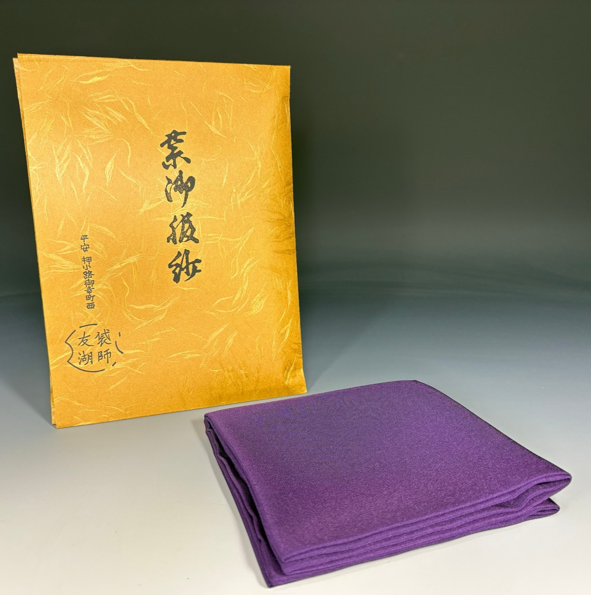
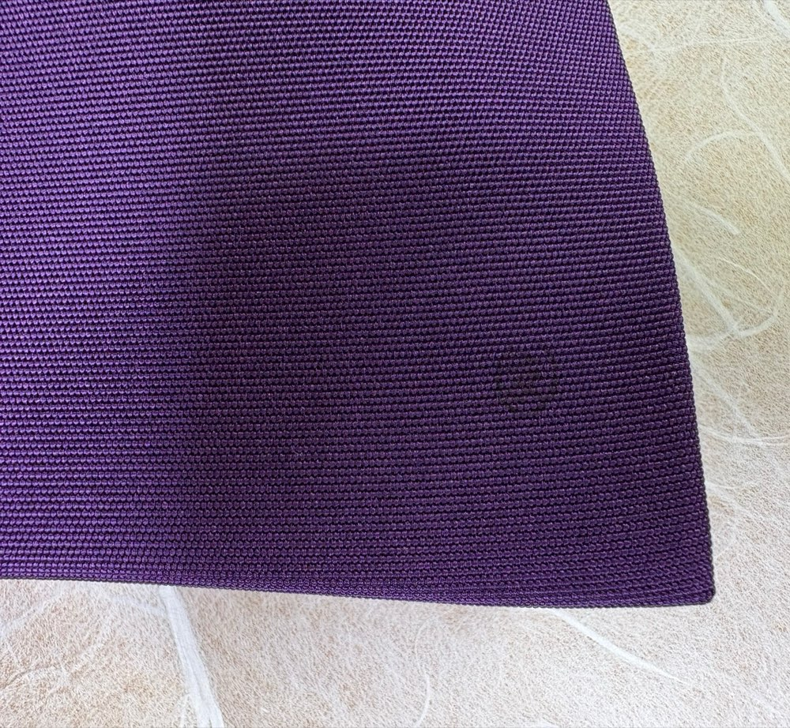
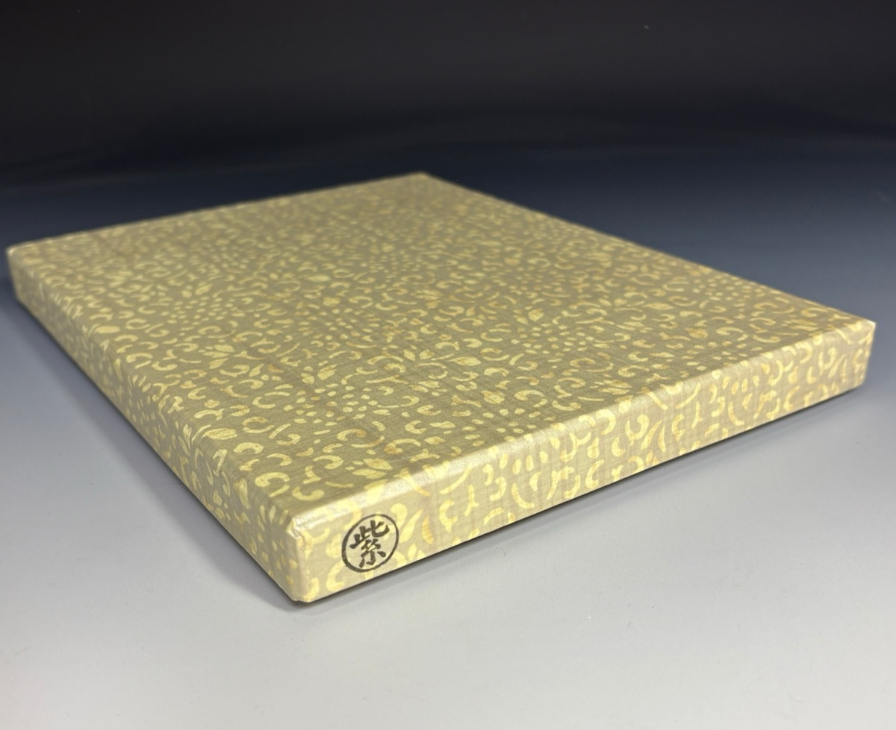
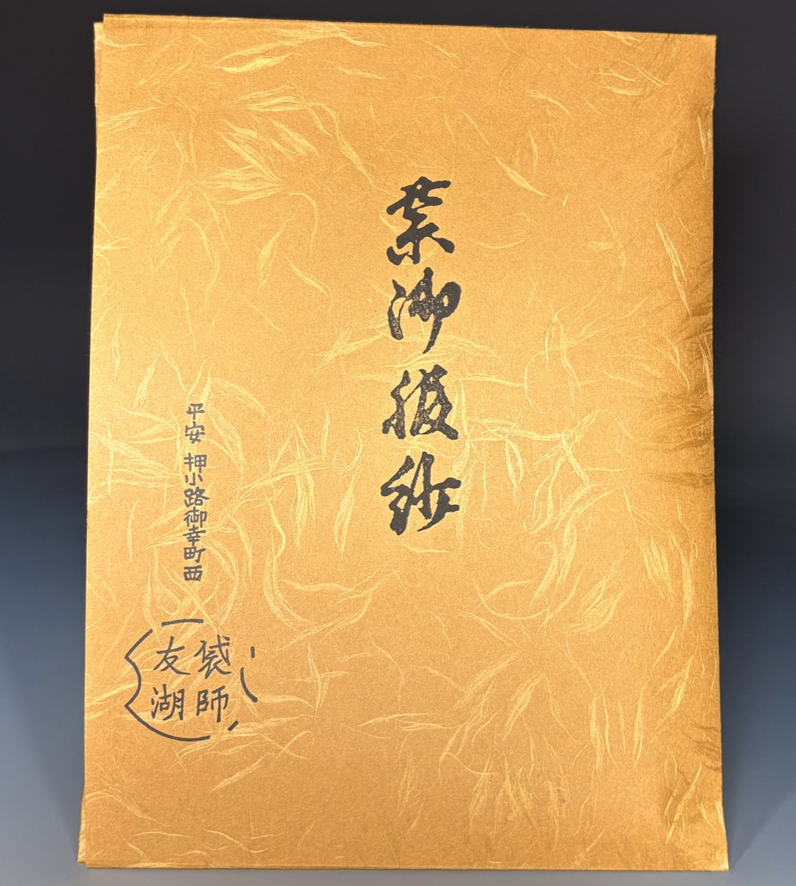
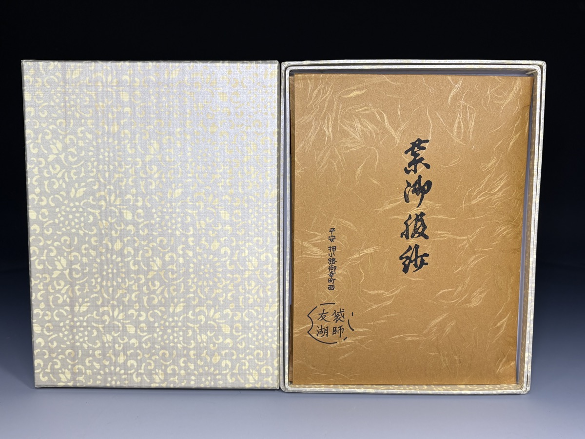

伝統の友湖帛紗、本物志向の方に。
色：紫。サイズ：約縦27〜28cm×横26.5〜28.5cm程度で、手作りゆえの個体差がございます。
表千家・裏千家・武者小路千家の三千家に仕え、茶道の道具を代々守り伝える10の名門職家を指します。これらの職家は、千利休の好みを基準に、各々が専門の茶道具を制作し、茶の湯文化を支えています。
土田友湖は千家十職の一角を担う袋師の家元で、主に茶入の仕覆（しふく）、帛紗（ふくさ）、紐、組物などの布製品を製作します。当主の通称は「半四郎」で、隠居時に「友湖」を名乗り、表千家7代如心斎からこの号を賜った歴史があります。初代は袋師・亀岡宗理から家職を譲られ、表千家6代覚々斎の引き立てで千家袋師となりました。
5代目までは主に仕覆を中心に手掛けていましたが、以降は帛紗や角帯、数寄屋袋なども制作。絹の質感や縫製の精巧さで知られ、茶道愛好家から最高峰と評されます。当代は12代または13代土田友湖（半四郎）が襲名し、作品には「友」の印が押されます。
土田家は近江の武家出身で、西陣織の仲買人を経て袋師の道へ。明治期に千家十職の呼称が定着する中、土田友湖は袋物の専門家として欠かせない存在です。帛紗は厚みのある正絹塩瀬を使い、しっとりとした手触りが特徴で、表千家・裏千家双方で使用可能です。
土田友湖の帛紗は、お点前用として最適な逸品で、重さは約10匁（個体差あり）です。化粧箱入りやタトウ紙付きのものが多く、贈答にもぴったり。絹の光沢と耐久性が高く評価され、茶会で活躍しています。この伝統のクオリティをお楽しみください。
希少な友湖帛紗を所持することによるプレステージ感を、茶の湯の深みを堪能する贅沢を是非。
お点前帛紗（おてまえふくさ）は正方形ではありません。
お点前帛紗は、正絹（しょうけん）の生地を用い、染色および織り（機械織を含む）の工程を経て製作された帛紗でございます。
素材の特性および製造工程上、下記のような点が見られる場合がございますが、いずれも不良品ではございません。あらかじめご了承のうえお求めください。
染物の性質上、同じ色名であってもロットや個体により、わずかな色むらや色合いの違いが生じる場合がございます。
また、光の当たり方やご覧になる環境により見え方が異なる場合がございます。
生糸を用いた織物のため、同一規格であっても、しなやかさやコシ、重さの感じ方に個体差が生じる場合がございます。
織り上げや仕上げ工程により、重さやサイズに誤差が生じることがございます。
織り工程の性質上、糸の寄りや筋状に見える部分、軽微な織り段差が生じる場合がございます。
これらはご使用に支障のない範囲のものについては、通常品として出荷しております。
こちらの商品は、2回二つ折りの状態で発送させていただいております。
四つ折りの中心部分は、帛紗の性質上、糸に負荷がかかるため、2～3箇所ほど織り跡や糸のよれが見られる場合がございます。
これらは不良品ではなく、素材および発送形態による特性としてあらかじめご了承ください。
本品は三方縫いで仕立てられ、一辺のみ縫い目のない「わさ（輪）」がございます。
工程上、縫い目の幅や糸目にわずかな違いが生じる場合がございます。
ご使用を重ねることで折り癖がつき、次第に柔らかく手になじんでまいります。
折り跡や多少の伸縮は帛紗の性質としてご理解ください。
当店では、茶道具としてのご使用に支障がないことを前提に検品を行っております。
上記内容は正絹帛紗の特性として良品判定としております。
なお、明らかな破れ・穴あき等がある場合は、当店基準に基づき対応いたします。
お支払い・返品等については 特定商取引法に基づく表記 をご確認ください。